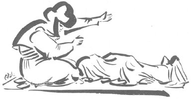

Yıllardanberi Halk Edebiyatımız üzerindeki çalışmalar, şüphesiz ki, bu sahaya çok şeyler kazandırmıştır. Bu çalışmalar devam edegeldikçe, daha çok kıymetli materyaller elde edileceği muhakkaktır.
Anadolu folklor hazinesinin, bütün diğer memleketlerindekinden zengin olduğu, su götürmez bir hakikattir.
İşte ben bu hazineden bir parça olan, Ağıtlar üzerinde çalışmaya karar verdim.
Ağıtlar, Halk Edebiyatımızın bellibaşlı bir kısmını doldurmaktadır. Şimdiye kadar üzerinde hemen hemen hiç işlenilmeyen bu kısmı, kendime saha yaptım. Ağıtlar üzerindeki araştırmalarım bitene kadar, folklor çalışmalarımın hepsi bu mevzua hasredilecektir.
Ağıtların bundan sonraki ciltlerinde daha geniş olarak, çalışmalarıma devam edeceğim. Bu ilk ciltte ağıt söyleme merasiminin nasıl yapıldığının üzerinde durdum. Diğer ciltlerde ağıtların menşeini araştıracak ve tahlilini yapacağım.
Bu ilk kitapta belki birçok hatalarım olmuştur. Folklorcu arkadaşlarımın ve büyüklerimin gördükleri hataları bana bildirmeleri, beni memnun ve bu yolda daha emniyetle yürümeme yardım eder.
K.S.G.